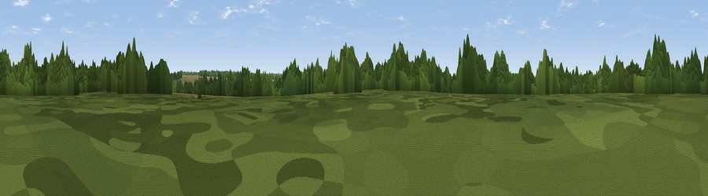

Viewpoint near Deane
#44680 in England · top 87% of its area beats it · near Deane · path 125 mWhere it is
The exact computed spot (SU 55115 48813). Click the marker for map links.
Public access: the nearest public right of way is about 125 m away — the final stretch may cross private land. Computed from Natural England's CRoW access layer and OpenStreetMap rights of way — not the legal definitive map. Always verify locally.
The view, rendered

A 360° render of this exact spot computed from the terrain model, tree cover and land cover — summer colours, afternoon light, calibrated against photographs of famous viewpoints. Real trees, hedges and buildings will differ in detail.
The panorama
Grey silhouette: terrain skyline in each direction (720 bearings, Earth curvature and refraction included). Dashed green: skyline with trees (+15 m) and buildings (+8 m) as obstacles. Blue strip: how far the ground is visible on each bearing.
Where the view opens
Wedge length = distance to the farthest visible ground on that bearing (vegetation-aware). Rings at 10, 25 and 50 km.
What fills the view
54% cropland · 27% woodland · 19% grassland ·
Angular shares of the visible panorama (visual magnitude), not map area. Landscape diversity 0.45 (0–1 Shannon).
Key numbers
More beautiful places nearby
The staircase of upgrades: each row has a higher view potential than everything closer. Driving times are estimates from straight-line distance, calibrated against real road routing — check an actual route before setting out.
| Place | Direction | Drive | Score |
|---|---|---|---|
| White Hill | WSW · 3 km | ~6 min | 19.9 |
| Viewpoint near Deane | N · 3 km | ~7 min | 32.1 |
| Viewpoint near North Waltham | S · 3 km | ~8 min | 34.0 |
| Viewpoint near Hannington | NNW · 5 km | ~11 min | 41.0 |
| Viewpoint near Ramsdell | NNE · 7 km | ~15 min | 45.8 |
| Cottington's Hill | NNW · 8 km | ~16 min | 65.0 |
| Viewpoint near Ecchinswell | NNW · 10 km | ~19 min | 65.7 |
| Watership Down | NW · 10 km | ~19 min | 71.4 |
51.23585, -1.21194 · source: osm peak · position refined by local search. Computed location — check access rights before visiting.